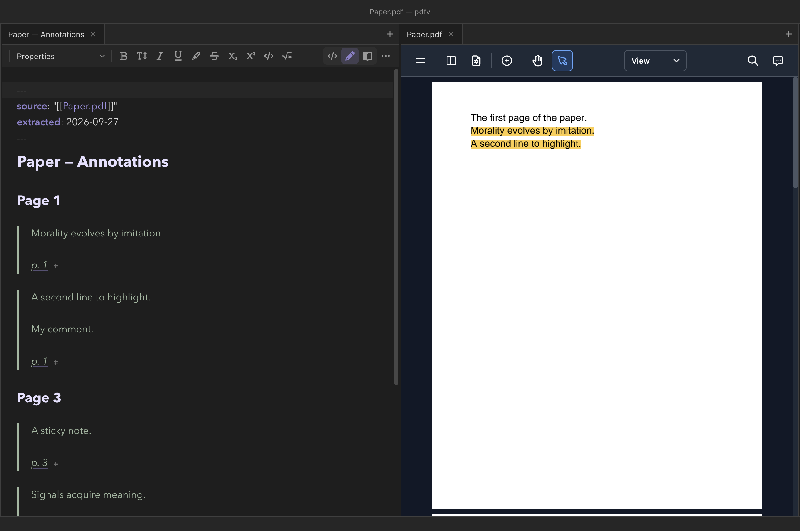

The vault
Attachments and files
Notes are rarely only text. A vault accumulates screenshots, scanned papers, photographs, lecture recordings, and PDFs, and Clew treats them as what they are: ordinary files in the folder, linked from notes the same way notes link to each other. This chapter covers the whole pipeline — pasting and dropping files into the editor, where they land and what they are called, how embeds render in reading mode, the built-in viewer tabs for media, and how to keep the accumulation organized.
Pasting and dropping
The fastest way to get a file into the vault is not to think about it. Copy an image anywhere — a screenshot, a picture from a web page, a chart out of another app — and paste it straight into the editor with ⌘V. Clew saves the image into the vault's attachment folder and inserts an embed at the cursor:
Inserted at the cursor
![[Pasted image 20260823142917.png]]
Dropping works the same way, and for any kind of file: drag one or more
files from Finder (or your platform's file manager) onto the editor,
and each is saved to the attachment folder and linked at the drop
position, one per line. Media files — images, PDFs, audio, video —
are inserted as ![[embeds]] so they render in reading
mode; any other file type gets a plain [[link]] instead.
What the file is called
A pasted clipboard image usually arrives with no useful name (the
clipboard calls everything image.png), so Clew names it by
timestamp: Pasted image 20260823142917.png — year, month,
day, hour, minute, second. A dropped file keeps its own name. In both
cases the name is sanitized (path separators and colons become dashes)
and deduplicated against the attachment folder: pasting
chart.png twice gives you chart.png and
chart 1.png, never an overwrite.
HEIC photographs
Photographs from an iPhone often arrive as HEIC, which Chromium — and
therefore Clew's reading mode — cannot display. On macOS, Clew
converts HEIC and HEIF files to JPEG transparently as they are saved,
so the vault only ever receives a .jpg. The conversion
preserves EXIF metadata, including GPS coordinates — which matters if
you use photo maps, where geotagged photos pin
themselves to an interactive map. If the conversion fails for some
reason, the original bytes are kept rather than lost.
How attachments are linked
Attachments are addressed exactly like notes: by name, with the vault
resolving where the file actually lives. ![[Earthrise.jpg]]
finds the file whether it sits in the vault root, in
Attachments/, or three folders deep — when several files
share a basename, the one with the shortest path wins, and you can
always write an explicit path (![[Attachments/Holiday/beach.jpg]])
to pick one out. Because bare names resolve regardless of folder, you
can reorganize the attachment folder later without breaking the embeds
that point into it.
A plain [[wikilink]] to an attachment (no !)
does not embed it; it renders as an ordinary link, and clicking it
opens the file in a viewer tab. The full link grammar — aliases,
headings, transclusion of notes — is covered in
Links and embeds; this chapter
sticks to what is specific to files.
Viewer tabs
Images, PDFs, audio, and video open as tabs in their own right — click
one in the file explorer, or click a [[link]] to one in
reading mode, and it opens in a viewer tab alongside your note tabs. A
viewer tab behaves like any other: it can be dragged into a split, kept
open next to the note that discusses it, and reopened from the tab's
history. PDFs open in Clew's own viewer — page navigation, thumbnails,
zooming, text search and selection, printing, and annotation.
Embedding media in notes
An embed is an attachment placed inside a note's rendered output. The syntax is Obsidian's: an exclamation mark before a wikilink, on its own line.
Images
You write
![[NASA - Earthrise.jpg]]
renders the image at its natural size, capped to the note's width.
Images take Obsidian's size syntax after a |: a width in
pixels, a width and height as
widthxheight, or alt text
followed by a size.
You write
![[clew-gradient.png|200]]
![[clew-gradient.png|300x200]]
![[clew-gradient.png|A stretched gradient|320x60]]
The rule for the segments after the name: only the last one
can be a size, and it must look like one — all digits, or
digitsxdigits. Anything else is treated as alt text, so
![[photo.jpg|The 1968 original]] is a caption, not a
mangled size. Videos accept the same size syntax; audio and PDFs
ignore it.
PDFs
![[sample.pdf]] embeds the document itself inside a titled
box in the note — page through it, search it, and annotate it without
leaving reading mode. The box's title is a link that opens the same file
in a full viewer tab, and beside it sits a ⟷ button that
expands the embed to the width of the window and back: useful when you
want the page and comment sidebars beside the document rather than
stacked below it, which is what happens in a narrow column.
A PDF a note embeds itself in raw HTML — an <iframe>,
<embed> or <object> pointing at a PDF
in the vault — opens in the same viewer, at the page a
#page=N asks for and at the size the HTML gives it. A
relative path is read from the note's own folder and one starting with
/ from the vault's root; anything outside the vault, or not a
PDF, is left as written. A website export
keeps your HTML exactly as you wrote it. (In 0.11.1 such a frame is the
browser's own PDF viewer.)
Annotating
The viewer's Annotate tab gives you highlighting, ink, shapes, notes and stamps. Anything you draw is written into the PDF file itself a couple of seconds after you stop — there is no Save button to miss, and a small chip beside the filename tells you where things stand (unsaved, saving…, saved). Switch away before then — another tab, closing the tab or the window, a note re-rendering over an embed — and the edit is written at once, the viewer kept alive out of sight until it lands. The one thing that does not wait is reloading the window (View → Reload), which discards an edit still pending.
Because the edit lands in the file rather than in a Clew-only sidecar, an annotation made here shows up in the viewer tab, on a canvas, in Preview.app, and on any other device the vault reaches. The same is true in reverse: annotate on an iPad and the marks are there when you open the note on your desktop. The three surfaces are three windows onto one file.
With a pen (an Apple Pencil, or a stylus on a touch screen): once the pen has touched a PDF in a PDF tab or a note, a finger scrolls the document there while a drawing tool — ink, the ink highlighter, a shape or a line — is selected, and only the pen draws, so a resting palm or a scroll leaves no stray mark. Highlighting and the other tools that work on a selection or a tap still answer to a finger. A mouse is never affected, and nothing changes until a pen has been used. (On the desktop this arrives after 0.11.1; on Windows pen-and-touch screens it has not been tested yet.)
Layers
Some PDFs carry layers — optional content the viewer can show or hide, common in CAD drawings, maps, and documents exported from design tools. Open the sidebar and choose the layers tab (the stacked squares) to see them: tick a layer to show or hide it, with the document's own grouping, ordering and radio-button relationships honoured. Showing and hiding changes only what you see — the file is not modified.
Clew can also create layers, which is where they earn their keep in a document that arrived with none. Add a layer in the panel and it becomes the home for new annotations — the highlighted layer is where new ink, highlights and notes go — so a first reading can sit on one layer and a second on another, or your marks apart from a colleague's. A selected annotation's toolbar has a layer button for moving it between layers, and hiding a layer hides the annotations on it. Deleting a layer asks what should happen to its content: keep it, delete it, or move it to another layer. Reset restores the visibility the document itself declares. Layer edits are saved into the PDF like any annotation, so they travel with the file — a viewer without layer support still shows the document, it just cannot switch the layers.
![[lecture.mp3]] renders an audio player;
![[Lumiere - Arrival of a Train (1895).webm]] renders a
video player with the usual controls. The demo vault's Media
Gallery note demonstrates both, public-domain film included.
Canvases
![[Demo Canvas.canvas]] embeds a live, read-only view of
a canvas — pannable and zoomable in place.
![[…]] must stand on its
own line. In the middle of a sentence, the ! renders
as a literal exclamation mark and the [[…]] becomes an
ordinary link — a useful fallback, but not an inline image. There
is no inline-embed form.
|300 and |300x200 size aliases, the
timestamped Pasted image names, and an attachment folder
of your choosing are all Obsidian conventions; a vault whose notes
embed media this way renders in both apps. Clew's HEIC-to-JPEG
conversion also mirrors what Obsidian users typically want, since
neither app can display HEIC directly.
Embeds in exports
When a note is exported to LaTeX or PDF,
image embeds become proper \includegraphics figures — a
pixel width from the size alias is converted to points — and an
embedded PDF is included the same way (which works for single-page
PDFs). Audio and video have no meaning on paper and are omitted.
PDF annotations as a note

What you highlight and note in a PDF can become a note you link to and
quote from. With the PDF's tab active, run PDF: extract annotations to
a note from the palette, or right-click the PDF in the file explorer
and choose Extract annotations to a note. Clew writes
<name> — Annotations.md beside the PDF: a
## Page N heading per page, and for each annotation a quote of
the text under it (read from the page itself), your comment, and a link
back to its page.
- Each entry ends in a block id,
^pdf-…, so another note can quote a single highlight:![[paper — Annotations#^pdf-…]]. - Run it again after more reading: annotations already in the note are left exactly as they are (write around them freely), new ones are added under their page, and nothing is ever removed.
- A link to a page,
[[paper.pdf#page=12]], opens the PDF at that page — from a note, from reading mode, or from the annotations note itself. - Highlights, underlines, strike-outs and squiggles quote their text; sticky notes and free text bring their comment; ink says it has no text.
Non-media files
Any other file type — an archive or a data file, say — can live in
the vault and be linked with a plain [[name]], but Clew
has no viewer for it: clicking it in the explorer does nothing, and
the right-click menu's Reveal in Finder hands it to the
application that owns it. Three non-media families get special
treatment elsewhere: .canvas files open in the
canvas, .bib files feed
citation completion and bibliographies,
and Word, Excel and PowerPoint documents open — and edit — in
office tabs.
Where attachments live
Pasted and dropped files land in one folder, set in
Settings → Files → Attachment folder —
Attachments by default, created on first use. Nothing
forces attachments to stay there: an image sitting next to the note
that uses it works just as well, and subfolders inside the attachment
folder are fine (the demo vault keeps an Attachments/Holiday/
folder of geotagged photos for its photo map). Since embeds resolve by
name, the folder layout is an organizational choice, not a linking
constraint — pick a scheme and let the setting enforce it for
everything you paste from now on.
Reference
| Kind | Extensions | Embed renders as | Viewer tab | Size alias |
|---|---|---|---|---|
| Image | .png .jpg .jpeg .gif .webp .avif .svg .bmp |
Inline image | Yes | Yes |
.pdf |
Clew's PDF viewer in a titled box (annotatable) | Yes | — | |
| Audio | .mp3 .m4a .wav .ogg .flac |
Audio player | Yes | — |
| Video | .mp4 .webm .mov |
Video player | Yes | Yes |
| Canvas | .canvas |
Live read-only canvas scene | Canvas tab | — |
| Office | .docx .xlsx .pptx .odt .ods .odp |
Static thumbnail; |live for an editable LibreOffice |
Office tab (editable) | — |
| Anything else | — | Not embeddable; [[link]] only | No | — |
| Behaviour | Detail |
|---|---|
| Attachment folder | Settings → Files → Attachment folder; default
Attachments. |
| Pasted-image names | Pasted image YYYYMMDDHHMMSS.ext; dropped files
keep their names. |
| Name collisions | Deduplicated: x.png, x 1.png,
x 2.png… |
| HEIC/HEIF | Converted to JPEG on macOS as they are saved; EXIF GPS preserved. |
| Resolution | By basename, shortest path wins; explicit paths allowed. |
| Media embed | ![[file]] on its own line; plain
[[file]] opens the viewer instead. |
See also
- Links and embeds — the full wikilink and transclusion syntax.
- Vaults and files — the explorer, file operations, and what renames rewrite.
- Interactive maps — photo maps built from geotagged attachments.
- The canvas — attachments as canvas nodes, and canvas embeds in notes.
- Exporting notes — how embeds carry over to HTML, LaTeX, and PDF.